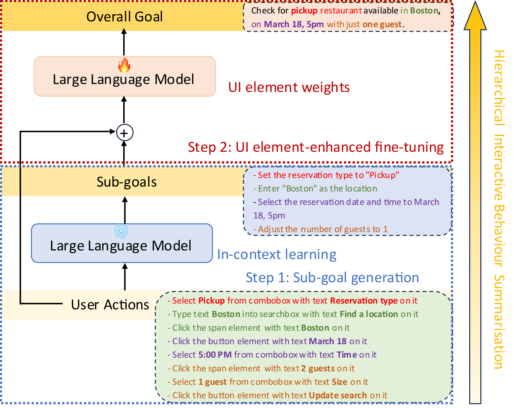

SummAct: Uncovering User Intentions Through Interactive Behaviour Summarisation
Guanhua Zhang, Mohamed Ahmed, Zhiming Hu, Andreas Bulling
Proceedings of the ACM CHI Conference on Human Factors in Computing Systems (CHI), 2025: 1-17.

Abstract
Recent work has highlighted the potential of modelling interactive behaviour analogously to natural language. We propose interactive behaviour summarisation as a novel computational task and demonstrate its usefulness for automatically uncovering latent user goals while interacting with graphical user interfaces. We introduce SummAct – a novel hierarchical method to summarise low-level input actions into high-level goals to tackle this task. SummAct first identifies sub-goals from user actions using a large language model and in-context learning. In a second step, high-level goals are obtained by fine-tuning the model using a novel UI element weighting mechanism to preserve detailed context information embedded within UI elements during summarisation. Through a series of evaluations, we demonstrate that SummAct significantly outperforms baseline methods across desktop and mobile user interfaces and interactive tasks by up to 21.9%. We further introduce two exciting example use cases enabled by our method: interactive behaviour forecasting and automatic behaviour synonym identification.Links
BibTeX
@inproceedings{zhang25summact,
title = {SummAct: Uncovering User Intentions Through Interactive Behaviour Summarisation},
author = {Zhang, Guanhua and Ahmed, Mohamed and Hu, Zhiming and Bulling, Andreas},
year = {2025},
pages = {1--17},
booktitle = {Proceedings of the ACM CHI Conference on Human Factors in Computing Systems}}